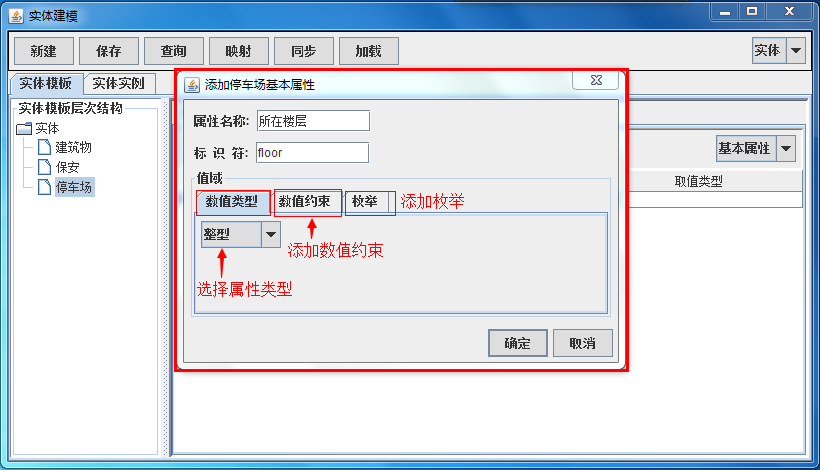

Research on Internet of Things Architecture and Resource Middleware
This study focuses on providing an infrastructure to open up or even break the current application silos and facilitate the bridge from Intranet of Things to Internet of Things. It provides an infras- tructure for heterogeneous resource accessing and formally describing resources and entities based on semantic model, then provides their outputs to different applications by the way of well-understood and machine-processible format. It aims to open resources capabilities and enable the reusing and sharing of cross-system resources, meanwhile support the interaction between systems. Based on the concept of EDSOA (event-driven service-oriented architecture), the middleware can flex- ibly access and integrate the heterogeneous sensor devices and achieve the transformation of raw data, observation data, scenario data based on resource model. The event processing engine achieved the ag- gregation and intelligent processing of multi-source data. Achived the separation of data and application through the unified message publish/subscribe network, and provides a unified data integration platfor- m for the upper-layer IoT application. The entire platform consists of five parts: IoT resource modeling tools, IoT resource directory. IoT resource access gateways, unified messaging publish/subscribe net- works, and complex event processing engines.
Resource model tools

